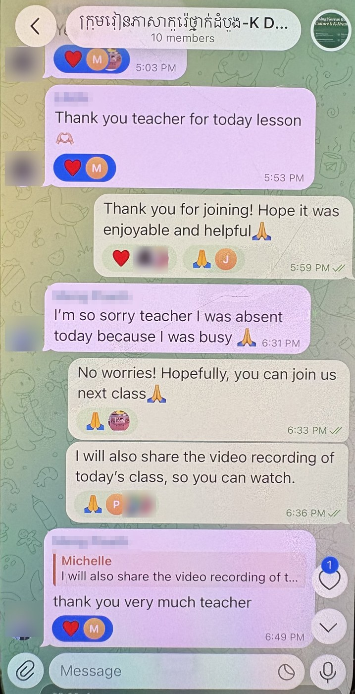

▶
▶
My contributions
- Co-founded Lumen to close a gap I noticed: Cambodian children with almost no books. I run the company website and wrote about the work in A Pagoda.
- Handled incorporation on the ground with local counsel: an E-class business visa, Ministry of Commerce filings, shareholder terms, office management.
- Take a book from a youth’s first recount of folktale and other stories to print across manuscript, translation, and printing in Khmer, English, and Korean.
- Funded the first runs myself; sales now pay for 300 additional copies, given free to schools, libraries, and partners to promote reading and cultural understanding.
- Run biweekly reading and exchange workshops, in schools and over Zoom, for 46 youths and young adults.
- Created and maintain an active group chat with 9 Cambodian national librarians to provide immediate support with Korean language learning.
- Coordinate Cambodian youth library managers and overseas volunteers to deliver 2,500+ donated books from Korea and the U.S., growing the National Library’s children’s section and three small libraries.
- Led outreach to institutions including Royal University of Phnom Penh through cold emails and the Ewha community
The site

In video
Lumen Education Program: publishing and placing books in Cambodia.
In photos